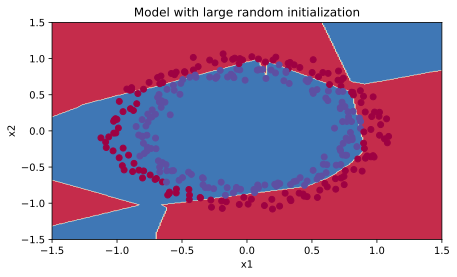

Importance of Proper Initialization of Model Weights
Introduction
Training your neural network hinges significantly on the initial values assigned to the weights. An adept choice in initialization methods plays a pivotal role in streamlining the learning process.
In the realm of neural networks, weight initialization stands as a critical precursor to successful training. It acts as the bedrock upon which the network learns intricate patterns and correlations within data. Choosing the optimal initialization method can profoundly influence the network’s ability to converge efficiently and effectively.
This exploration aims to delve into various initialization techniques, namely random, zeros, and He initialization. Each method introduces distinct characteristics to the neural network’s learning dynamics, impacting its convergence and eventual performance.
An adeptly chosen initialization method brings forth several advantages:
- Accelerated convergence of gradient descent
- Enhanced likelihood of gradient descent converging towards a lower training and generalization error
Let’s delve into these initialization techniques and witness their unique effects on the learning process. The following is the scatter plot of a datset with two classes:
Zero Initialization
One fundamental approach in initializing neural network parameters involves setting all weights and biases to zeros. This method, exemplified in the code snippet above, initializes both weight matrices \((W^{[1]}, W^{[2]}, ..., W^{[L]})\) and bias vectors \((b^{[1]}, b^{[2]}, ..., b^{[L]})\) to zeros.
def initialize_parameters_zeros(layers_dims):
parameters = {}
L = len(layers_dims)
for l in range(1, L):
parameters[f"W{l}"] = np.zeros((layers_dims[l], layers_dims[l-1]))
parameters[f"b{l}"] = np.zeros((layers_dims[l], 1))
return parametersWhile this method is simple and computationally efficient, initializing all parameters to zero can lead to symmetry between neurons in a layer. This symmetry perpetuates throughout the network during training, resulting in every neuron in a given layer learning the same features. Consequently, this hampers the network’s ability to learn diverse representations, thereby limiting its capacity to capture complex patterns within the data.
Let’s look at how the network performs with this initialization method:
Let’s understand what’s happening:
- Zero Initialization Resulted in Symmetry: Due to initializing all weights and biases to zero, the network encounters symmetry across neurons within each layer.
- ReLU Activation Outputs Zero: The ReLU activation function yields zero when the input, calculated as the product of weights and input, is zero. Therefore, \(a = \text{ReLU}(z) = \max(0, z) = 0\).
- Sigmoid Activation for Classification: At the output layer, using the sigmoid activation function, the prediction (\(y_{\text{pred}}\)) becomes \(0.5\) due to the output of \(a\) being zero.
- Ineffective Loss Differentiation: The resulting \(y_{\text{pred}} = 0.5\) for every input provides no distinction in the loss function. For both \(y = 1\) and \(y = 0\), the loss (\(\mathcal{L}\)) equates to \(0.6931\). This lack of differentiation inhibits the adjustment of weights during training.
- Stagnation in Learning: With identical loss values for both classes, there’s no gradient to prompt weight adjustments. Consequently, the model remains stuck with the initial zero weights, leading to uniform predictions of ‘0’ for all examples.
- Failure to Break Symmetry Limits Learning: The failure to break symmetry inhibits diverse learning among neurons within each layer. Consequently, the network’s capability equates to that of a linear classifier, severely limiting its capacity to learn complex patterns.
This initialization failure illustrates how initializing all weights to zero diminishes the network’s learning capacity, rendering it incapable of discerning intricate patterns within the data.
Random Initialization
Introducing randomness in weight initialization breaks symmetrical behavior within the neural network. By initializing weights randomly, each neuron begins learning distinct functions from its inputs. This specific implementation initializes weights randomly to significantly large values. The resulting function utilizes the code snippet provided below:
def initialize_parameters_random(layers_dims):
np.random.seed(3)
parameters = {}
L = len(layers_dims) # integer representing the number of layers
for l in range(1, L):
parameters[f"W{l}"] = np.random.randn(layers_dims[l], layers_dims[l-1]) * 10
parameters[f"b{l}"] = np.zeros((layers_dims[l], 1))
return parametersThis initialization method sets a seed (in this case, seed 3) to ensure reproducibility and generates weights using a random normal distribution. These weights, scaled by a factor of 10, are initialized to encourage diverse learning among neurons in different layers of the neural network.
Let’s look at how the network performs with this initialization method:

Observations:
- The model’s initial prediction accuracy for all points is notable. However, this high starting cost is due to the utilization of large random-valued weights. This results in the last activation function (sigmoid) producing outputs close to 0 or 1 for certain examples. When misclassifications occur under these conditions, the incurred loss becomes exceedingly high, potentially reaching infinity when \(\log(a^{[3]}) = \log(0)\).
- Suboptimal initialization can lead to gradient vanishing or exploding, hindering the optimization process’s speed.
- While extended training might yield improved results, the initial phase with excessively large random weight values notably impedes the optimization process.
In summary:
- Initializing weights with notably large random values proves ineffective.
- Initializing with smaller random values is anticipated to yield better outcomes. The critical aspect to address is determining the appropriate magnitude for these random values, a pursuit we explore in the subsequent section.
He Initialization
The He Initialization technique, pioneered by He et al. in 2015, offers an advanced method to initialize neural network parameters. Unlike simple zero initialization or Xavier initialization, He Initialization leverages a specific scaling factor (sqrt(2./layers_dims[l-1])) for the weights \((W^{[1]}, W^{[2]}, ..., W^{[L]})\).
def initialize_parameters_he(layers_dims):
np.random.seed(3)
parameters = {}
L = len(layers_dims) - 1
for l in range(1, L + 1):
parameters[f"W{l}"] = np.random.randn(layers_dims[l], layers_dims[l-1]) * np.sqrt(2/layers_dims[l-1])
parameters[f"b{l}"] = np.zeros((layers_dims[l], 1))
return parametersKey Aspects of He Initialization:
- Scaling Factor: Employs a scaling factor of
sqrt(2./layers_dims[l-1])for initializing the weights. - Random Initialization: Randomizes the weights using a Gaussian distribution with mean zero and variance adjusted by the scaling factor.
Impact:
- Mitigates Vanishing/Exploding Gradients: The strategic scaling of weights aids in preventing issues like vanishing or exploding gradients during training, facilitating more stable and efficient learning.
- Promotes Non-Linearity: Enables the network to learn more diverse and intricate representations by fostering non-linear activations, thereby enhancing its capability to capture complex patterns within the data.
Let’s look at how the network performs with this initialization method:
Observations:
- Perfect Separation of Classes:
- Effective Classification: The model utilizing He Initialization demonstrates exceptional performance by precisely segregating the two classes (represented by blue and red dots) in the scatter plot.
- Accurate Distribution Capture: Through the learned representations, the model accurately captures the distinctive distribution of the dataset.
- Efficient Convergence:
- Rapid Learning: He Initialization facilitates swift convergence of the model, achieving optimal class separation in a notably small number of iterations.
Conclusion
Different initialization methods significantly impact neural network performance:
- Symmetry Breakage: Zero initialization fails to break symmetry, hindering the network’s ability to learn distinct representations.
- Caution with Weights: Large random initialization leads to excessively large weights, impacting learning.
- He Initialization Effectiveness: He initialization emerges as a recommended method, effectively enabling the network to achieve a remarkable 99% accuracy. It aptly suits networks employing ReLU activations, showcasing its suitability for diverse architectures.
Key Takeaways:
- Initialization Variance: Varied initializations yield divergent outcomes in network performance.
- Symmetry Disruption: Random initialization mitigates symmetry issues, allowing different units to learn diverse features.
- Weight Magnitude Control: Caution must be exercised to prevent excessively large weights.
- He Initialization Suitability: Especially effective for networks employing ReLU activations, demonstrating superior performance and suitability for numerous architectures.